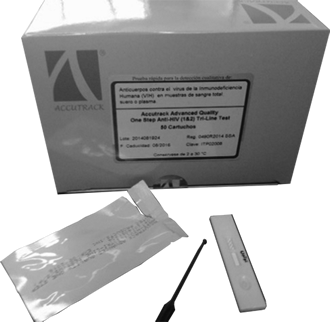
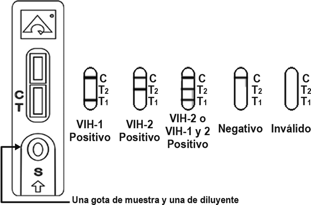

THE ADVANCED QUALITY™
(Sangre total, suero o plasma)

DESCRIPCIÓN: Es un ensayo de inmunocromatografía rápida para la determinación cualitativa de anticuerpos de todos los isotipos (IgG, IgM, IgA) específicos o HIV-1 incluyendo subtipo O y HIV-2 simultáneamente, en sangre total, suero o plasma.
PRINCIPIO DE LA PRUEBA: El ensayo se inicia con la aplicación de la muestra problema al pocillo de muestra. El antígeno de VIH conjugado con oro coloidal embebido en el pocillo de muestra reacciona con los anticuerpos de VIH presentes en la sangre, suero o plasma formando el complejo anticuerpo VIH/conjugado. La mezcla emigra a lo largo de la tira de prueba formando un complejo anticuerpo-VIH/conjugado, el cual es capturado por un antígeno de VIH recombinante inmovilizado en una membrana y formando una banda colorida en la región de prueba. Una muestra negativa no produce una banda colorida debido a la ausencia del complejo conjugado de oro coloidal/anticuerpos VIH. Los antígenos utilizados en la prueba de conjugado son proteínas recombinantes que corresponden a regiones altamente inmunorreactivas de VIH-I y VIH-2. Una banda coloreada en la región control aparece al final de la prueba sin considerar el resultado de la prueba. Esta banda control es el resultado de la unión del conjugado de oro coloidal al anticuerpo anti-VIH inmovilizado en la membrana. La banda control indica que el conjugado de oro coloidal es funcional.
FORMATO: Cassette.
MUESTRA: Suero, plasma o sangre total.
PROCEDIMIENTO:

INTERPRETACIÓN:

TIEMPO DE RESULTADOS: 3 a 10 minutos.
PRESENTACIÓN: 50 pruebas.
CADUCIDAD: 18 meses.
SENSIBILIDAD: 100%.
ESPECIFICIDAD: 99%.
Registro: 0490R2014 SSA
DATOS COMPLEMENTARIOS: Para mayores informes comunicarse a:
ACCUTRACK, S.A. DE C.V.
Teléfonos: (55) 5524-4481, 5524-2644, 5524-4575
e-mail: ventas@accutrack.com.mx
www.accutrack.com.mx